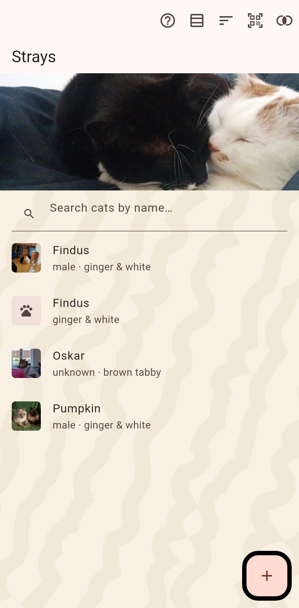

Cats with no home right now: found cats, escaped cats, cats from a poster. Tracked by where they were seen instead of an address.

A list or a table of every stray, with a filter at the top and the strays' own cover picture. The one plus fans out the ways a stray comes in: a new stray by hand, a photo taken now, a photo from the gallery, frames from a video, a flier. The scanner reads a cat(a)log code from a poster or another keeper's screen.
Every sighting is a position on the map; the latest one is the cat's pin, the earlier ones its trail. "Seen here now" on a cat's page records the phone's position; a hold on the map records one for a chosen cat. See The map.